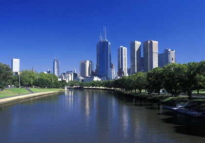
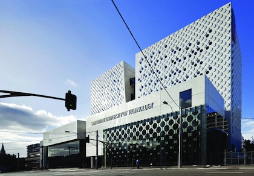

vssup 2014
Victorian Summer School in Ultracold Physics
The Victorian Summer School for Ultracold Physics, 2014, was a 9 day summer course of lectures at the postgraduate level, on ultra-cold physics — the science of temperatures as low as a billionth of one degree above absolute zero. Thar year, there was a special emphasis on low dimensional systems.
The VSSUP School was proposed by A/Prof Margaret Reid of the Faculty of Science Engineering and Technology (fset), and in 2014 was in its third year. It was organised by the Center for Quantum and Optical Science (cqos) at sut. The main sponsors in 2014 were fset, cqos and Swinburne Research at sut.
There were about 40 graduate students from around the world. About half were domestic students from Swinburne, Melbourne Uni, Monash and elswehere in Australia. The other half were from India, China, New Zealand, Singapore and elsewhere, with the longest traveling student flying in from Turku, Finland.
vssup lecturers came from all over Australasia, with one from Japan. As well as Swinburne, Melbourne and Monash University had provided some great lecturers and funding. Massey University in New Zealand was also a sponsor. Other lecturers had come from Otago, Auckland, Queensland, Griffith and unsw.
Topics covered incuded quantum nanomechanical oscillators, two-dimensional graphene physics, methods of simulating quantum dynamics, cold atoms magnetically coupled to surfaces, Schrodinger cats using trapped ions at low temperatures, polaritons in semiconductors, and ultra-cold Fermi gases.
The last day had lab tours and a student poster session.
vssup 2014 was a big success, with more universities and more dedicated international students involved than ever before.
Joachim Brand
Massey University, NZ
Kristian Helmerson
Monash University
Andy Martin
The University of Melbourne
Peter Drummond
Swinburne University of Technology

